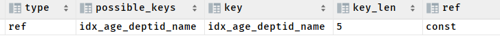
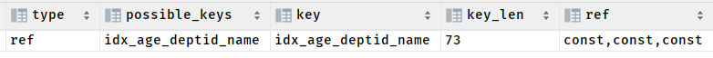
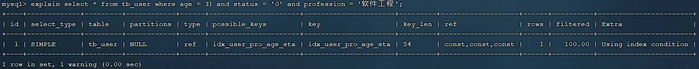

22. 进阶-索引-使用规则-验证索引效率_哔哩哔哩_bilibili
最左前缀
如果索引了多列（联合索引），要遵守最左前缀法则。最左前缀法则指的是查询从索引的最左列开始，并且不跳过索引中的列。如果跳跃某一列，索引将会部分失效(后面的字段索引失效)。
假设一张表的索引顺序是：age、deptid、name
那么我们的过滤条件的顺序应该是：
- age
- age 、depid
- depid、age （MySQL的 SQL 优化器调整了解析树，使查询字段符合了索引顺序，这才让索引生效了）
但是如果中间挑过了一个，索引就会不生效：
age、name：跳过了deptid，name不生效
EXPLAIN SELECT * FROM emp WHERE emp.age = 30 AND emp.name = 'abcd';此时联合索引生效，但是key_len 字段的值是 5，age是int类型，支持空，+1。说明 name 字段并没有按照索引去查询。对 name 字段来说，索引没有生效。也就是说，如果查询的的顺序中间断了，那么后面的引索都用不上了。
name、depid：跳过了age，都不生效
EXPLAIN SELECT SQL_NO_CACHE * FROM emp WHERE deptId = 5 and name = "aaa";
最左前缀法则与条件编写顺序无关
一张表的索引顺序：profession，age，status
对于如下SQL：
explain
select * from tb_user
where age = 31
and status = '0'
and profession = '软件工程'；
这是否满足最左前缀法则，走不走上述的联合索引，索引长度？
可以看到，是完全满足最左前缀法则的，索引长度54，联合索引是生效的。最左前缀法则中指的最左边的列，是指在查询时，联合索引的最左边的字段(即是第一个字段)必须存在，与我们编写SQL时，条件编写的先后顺序无关。
order by
EXPLAIN
SELECT *
FROM emp
WHERE deptId = 5 and name = "aaa" order by age;
索引没有生效！这是因为 order by 没有过滤功能，不会触发索引。相当于查询过程中没有 age 字段参与。
order by 是在数据过滤之后才执行的，它仅仅是针对过滤结果进行排序，而不是对数据库表或索引表排序。
范围查询
联合索引中，出现范围查询(>,<)，范围查询右侧的列索引失效。
索引顺序：profession,age,status
-- 索引顺序：profession,age,status
explain select * from tb_user
where profession = '软件工程'
and age = 30 and status= '0';
全部命中索引：key_len = 42
explain select * from tb_user
where profession = '软件工程'
and age > 30 and status= '0';
使用了<,>，使得status的索引失效
explain select * from tb_user
where profession = '软件工程'
and age >= 30 and status= '0';
使用>= ; <=，索引再次有效
总结：在业务允许的情况下，尽可能的使用类似于 >= 或 <= 这类的范围查询，而避免使用 > 或 <
索引列运算
不要在索引列上进行运算操作， 索引将失效。
explain select * from tb_user where substring(phone,10,2) = '15';
字符串不加引号
字符串类型字段使用时，不加引号，索引将失效。
explain select * from tb_user where phone = 17799990015;
模糊查询
explain select * from tb_user where profession like '软件%';
explain select * from tb_user where profession like '%工程';
explain select * from tb_user where profession like '%工%';
在like模糊查询中，在关键字后面加%(或者_ )，索引可以生效。
而如果在关键字前面加了%(或者_ )，索引将会失效。
or连接条件
explain select * from tb_user where phone = '17799990017' or age = 23;

-- 莲花索引 idx_user_pro_age_sta `profession`, `age`, `status`
explain select * from tb_user where profession = '软件工程' or age = 23;
用or分割开的条件， 如果or前的条件中的列有索引，而后面的列中没有索引，那么涉及的索引都不会被用到。
我们对age字段建立索引
create index idx_user_age on tb_user(age);
再次测试，发现索引生效了
-- 这里的\G 可以在 MySQL 的命令行客户端（如 mysql 命令行工具）中使用的，对于一些图形化工具，没有这个语法
mysql> explain select * from tb_user where phone = '17799990017' or age = 23\G;
*************************** 1. row ***************************
id: 1
select_type: SIMPLE
table: tb_user
partitions: NULL
type: index_merge
possible_keys: idx_user_phone,idx_user_age
key: idx_user_phone,idx_user_age
key_len: 35,2
ref: NULL
rows: 3
filtered: 100.00
Extra: Using union(idx_user_phone,idx_user_age); Using where
当or连接的条件，左右两侧字段都有索引时，索引才会生效
但是对于联合索引却不是这样的：
mysql> explain select * from tb_user where profession = '软件工程' or age = 23\G;
*************************** 1. row ***************************
id: 1
select_type: SIMPLE
table: tb_user
partitions: NULL
type: ALL
possible_keys: idx_user_pro_age_sta,idx_user_age
key: NULL
key_len: NULL
ref: NULL
rows: 24
filtered: 14.74
Extra: Using where
1 row in set, 1 warning (0.00 sec)
数据分布影响
范围查询的情况
在mysql中tb_user的数据分配如下
mysql> SELECT id,name, phone FROM tb_user;
+----+-----------+-------------+
| id | name | phone |
+----+-----------+-------------+
| 1 | 吕布 | 17799990000 |
| 2 | 曹操 | 17799990001 |
| 3 | 赵云 | 17799990002 |
| 4 | 孙悟空 | 17799990003 |
| 5 | 花木兰 | 17799990004 |
| 6 | 大乔 | 17799990005 |
| 7 | 露娜 | 17799990006 |
| 8 | 程咬金 | 17799990007 |
| 9 | 项羽 | 17799990008 |
| 10 | 白起 | 17799990009 |
| 11 | 韩信 | 17799990010 |
| 12 | 荆轲 | 17799990011 |
| 13 | 兰陵王 | 17799990012 |
| 14 | 狂铁 | 17799990013 |
| 15 | 貂蝉 | 17799990014 |
| 16 | 妲己 | 17799990015 |
| 17 | 芈月 | 17799990016 |
| 18 | 嬴政 | 17799990017 |
| 19 | 狄仁杰 | 17799990018 |
| 20 | 安琪拉 | 17799990019 |
| 21 | 典韦 | 17799990020 |
| 22 | 廉颇 | 17799990021 |
| 23 | 后羿 | 17799990022 |
| 24 | 姜子牙 | 17799990023 |
+----+-----------+-------------+
24 rows in set (0.00 sec)
在这里面，绝大部分的phone要大于17799990010和17799990015，所以mysql数据库不会走索引，因为全表扫描的效率更高
mysql> explain select * from tb_user where phone >= '17799990010'\G;
*************************** 1. row ***************************
id: 1
select_type: SIMPLE
table: tb_user
partitions: NULL
type: ALL
possible_keys: idx_user_phone
key: NULL
key_len: NULL
ref: NULL
rows: 24
filtered: 58.33
Extra: Using where
1 row in set, 1 warning (0.00 sec)
ERROR:
No query specified
mysql> explain select * from tb_user where phone >= '17799990015'\G;
*************************** 1. row ***************************
id: 1
select_type: SIMPLE
table: tb_user
partitions: NULL
type: ALL
possible_keys: idx_user_phone
key: NULL
key_len: NULL
ref: NULL
rows: 24
filtered: 37.50
Extra: Using where
1 row in set, 1 warning (0.00 sec)
但是对于phone >= '17799990020'的结果，比较少，mysql评估走索引会更好
mysql> explain select * from tb_user where phone >= '17799990020'\G;
*************************** 1. row ***************************
id: 1
select_type: SIMPLE
table: tb_user
partitions: NULL
type: range
possible_keys: idx_user_phone
key: idx_user_phone
key_len: 35
ref: NULL
rows: 4
filtered: 100.00
Extra: Using index condition
1 row in set, 1 warning (0.00 sec)
是因为MySQL在查询时，会评估使用索引的效率与走全表扫描的效率，如果走全表扫描更快，则放弃索引，走全表扫描。 因为索引是用来索引少量数据的，如果通过索引查询返回大批量的数据，则还不如走全表扫描来的快，此时索引就会失效。
不等操作（is null & is not null）
mysql> explain select * from tb_user where profession is null\G;
*************************** 1. row ***************************
id: 1
select_type: SIMPLE
table: tb_user
partitions: NULL
type: ref
possible_keys: idx_user_pro_age_sta
key: idx_user_pro_age_sta
key_len: 36
ref: const
rows: 1
filtered: 100.00
Extra: Using index condition
1 row in set, 1 warning (0.00 sec)
mysql> explain select * from tb_user where profession is not null\G;
*************************** 1. row ***************************
id: 1
select_type: SIMPLE
table: tb_user
partitions: NULL
type: ALL
possible_keys: idx_user_pro_age_sta
key: NULL
key_len: NULL
ref: NULL
rows: 24
filtered: 100.00
Extra: Using where
1 row in set, 1 warning (0.00 sec)
is null 走了索引，而is not null没有走索引
接下来我们把profession字段全部置为null
mysql> update tb_user set profession = null;
mysql> explain select * from tb_user where profession is null\G;
*************************** 1. row ***************************
id: 1
select_type: SIMPLE
table: tb_user
partitions: NULL
type: ALL
possible_keys: idx_user_pro_age_sta
key: NULL
key_len: NULL
ref: NULL
rows: 24
filtered: 100.00
Extra: Using where
1 row in set, 1 warning (0.00 sec)
mysql> explain select * from tb_user where profession is not null\G;
*************************** 1. row ***************************
id: 1
select_type: SIMPLE
table: tb_user
partitions: NULL
type: range
possible_keys: idx_user_pro_age_sta
key: idx_user_pro_age_sta
key_len: 36
ref: NULL
rows: 1
filtered: 100.00
Extra: Using index condition
1 row in set, 1 warning (0.00 sec)
is null 没走索引，而is not null走了索引
为什么会出现这种现象？
这是和数据库的数据分布有关系。查询时MySQL会评估，走索引快，还是全表扫描快，如果全表扫描更快，则放弃索引走全表扫描。 因此，is null 、is not null是否走索引，得具体情况具体分析，并不是固定的。
转载请注明来源，欢迎对文章中的引用来源进行考证，欢迎指出任何有错误或不够清晰的表达。可以在下面评论区评论，也可以邮件至 1909773034@qq.com